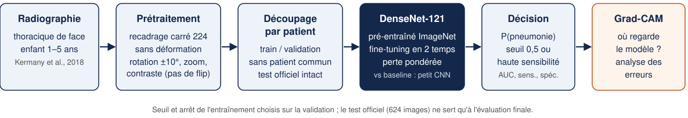
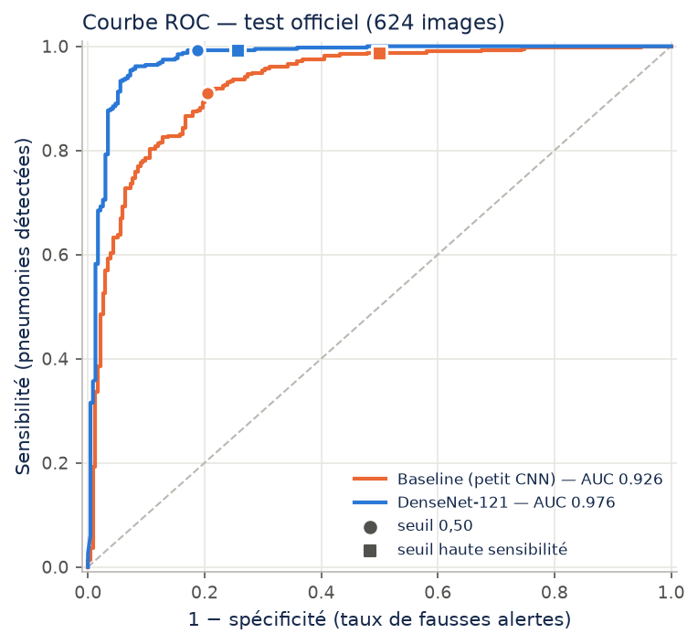
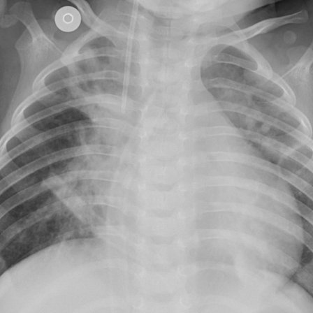
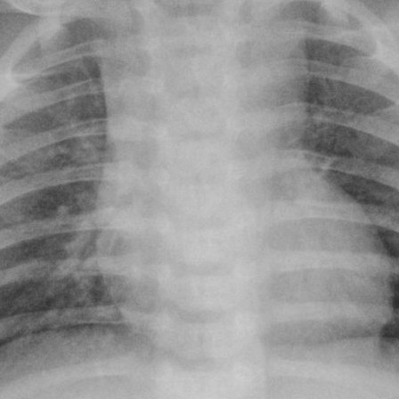

1Problème
Un réseau de neurones peut-il reconnaître une pneumonie sur la radiographie d'un enfant ? Et surtout, sur quoi s'appuie-t-il ?
En santé, un bon score ne suffit pas : je veux mesurer les erreurs et voir où le modèle regarde.
2Données
5 856 radiographies d'enfants de 1 à 5 ans, un seul hôpital (Kermany et al., Cell 2018).
- 74 % de pneumonies dans le train : perte pondérée.
- Validation par patient : 0 enfant commun.
- Test officiel (624 images) intact.
3Méthode

4Résultats réels sur le test officiel (624 images jamais vues)
IC 95 % : 0,961–0,988
3 ratées sur 390
44 fausses alertes / 234
| Seuil 0,5 | AUC | Sens. | Spéc. |
|---|---|---|---|
| Baseline (petit CNN) | 0,926 | 0,910 | 0,795 |
| DenseNet-121 pré-entraîné | 0,976 | 0,992 | 0,812 |
Point faible : les fausses alertes. Spécificité de 0,995 en validation, mais 0,812 sur le test. Baisser le seuil n'a ajouté que des fausses alertes.

5Explicabilité : où regarde le modèle ? (Grad-CAM)




Sur les 624 cartes, 24,7 % de l'importance tombe sur les bords (36 % pour une carte uniforme) : le modèle regarde surtout le centre. Mais Grad-CAM est grossier (7×7) : il montre où, pas quoi.
Erreur analysée : l'image normale est voilée, et le modèle y « voit » des opacités. C'est sans doute un effet de la qualité d'image, pas un signe médical. Seul un radiologue pourrait le confirmer.
6Le piège de la forme des images
Les images de pneumonie sont plus larges. Leur seule forme, sans regarder la radio, prédit la pneumonie : AUC de 0,87 sur le train (0,70 sur le test).
Écraser les images en carré aurait offert ce raccourci au modèle. J'ai recadré au centre, sans déformation.
7Limites
- Enfants, un seul hôpital.
- Validation peu représentative du test.
- Pas de distinction virale / bactérienne.
- Grad-CAM ne localise pas une lésion.
- Aucune validation clinique : pas un outil de diagnostic.
8À approfondir en master
- Les bases cliniques : lire une image, le parcours de soin.
- La validation sur plusieurs hôpitaux.
- L'explicabilité évaluée avec des soignants.
- Le cadre des dispositifs médicaux.